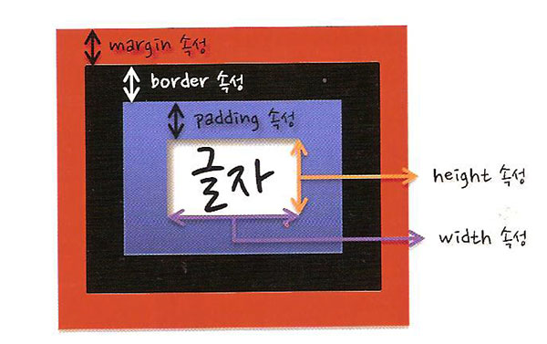

바깥여백: margin
안쪽여백: padding
내용이 들어갑니다.
언어란 무엇인가? 음성으로 의사를 표현하여 의지를 관철시키려는 의도가 있는 것.
의지를 관철시키려는 의도가 있건 없건 음성으로 의사를 표현하기만 하면 그것이 언어일까?
마진 중첩현상
테두리의 모양: border-style
테두리의 두께: border-width
테두리의 색상: border-color
테두리의 테두리 모양 속성: none
테두리의 테두리 모양 속성: dotted
테두리의 테두리 모양 속성: dashed
테두리의 테두리 모양 속성: solid
테두리의 테두리 모양 속성: groove
테두리의 테두리 모양 속성: ridge
테두리의 테두리 모양 속성: double
테두리의 테두리 모양 속성: inset
테두리의 테두리 모양 속성: outset
연습중입니다...
아메리카노
에스프레소의 향은 그대로 느끼면서 뜨거운 물을 부어 1:2 정도의 비율로 연하게 먹는 커피다.
| 내용1 | 내용2 | 내용3 |
| 내용4 | 내용5 | 내용6 |
| 내용7 | 내용8 | 내용9 |